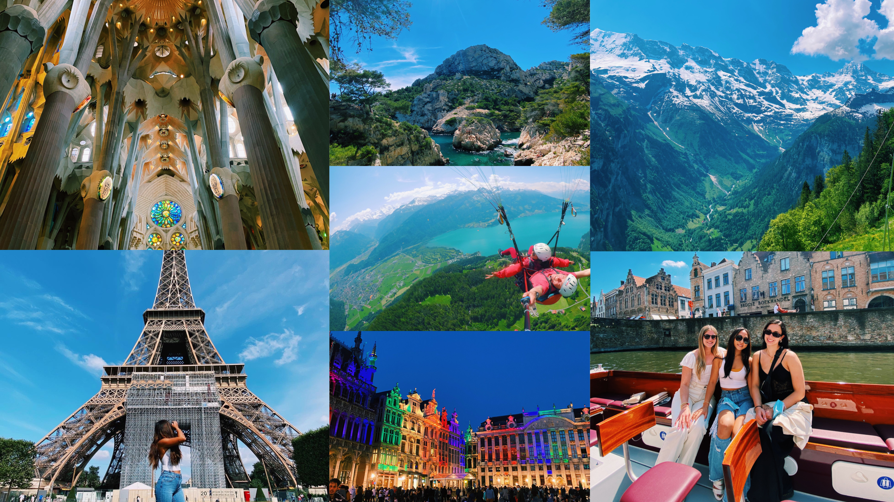

Hi everyone! My name is Elisa Park and I am a fourth year computational media major from Acworth, Georgia.
My passions for this major stem from my interests in both media and design. I have always been interested in the evolution of technology and how the digital landscape is constantly changing. The courses offered under this major have allowed me to focus on all of these passions while still exploring other ways in which I can apply gained knowledge into practical applications. In my free time, I love to read. Another reason as to why I love this major is it offers courses that emphasize the importance of reading written works with goals of communicating ideas and understanding concepts.
I also love to travel. Whether it be to away games, or through my adventures studying abroad, I’ve come to truly value the experiences offered by exploring different places. I hope to one day work in a role that allows me to follow all of these passions.
